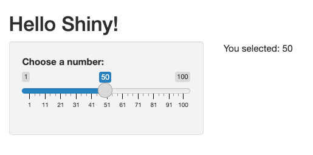

flowchart LR mu1["input$mu1"] --> samples["samples()"] mu2["input$mu2"] --> samples samples --> plot["output$plot"] samples --> means["output$means"]
8 Introduction to Shiny
Objectives
- Know what shiny is and what problems it solves.
- See how a basic shiny app is structured and executed.
- Be able to describe reactive programming at a high level.
- Recognise common use cases for
shiny, and its limitations. - Recognise the most common input, output and layout components, and know where to look up the rest.
8.1 What is Shiny?
Shiny is an R package, developed by Posit (formerly RStudio), for building interactive web applications entirely in R. The problem it solves is sharing an analysis with people who do not program in R. A static report shows only the plots and tables that you chose to include; a Shiny app lets its users change the inputs themselves — choose a subset of the data, adjust a parameter — and see the results update immediately in their web browser. You write only R code: Shiny generates the HTML, CSS and JavaScript that make up the web page.
shiny is not part of tidyverse; it is a separate package that must be installed on its own, and loaded with library(shiny) at the top of every app script.
TipInstalling Shiny
Run install.packages("shiny") once in your R console, then load it with library(shiny) at the top of each app script. As with Quarto documents (see Week 2), never put install.packages() in the app script itself: the package would be re-installed every time the app starts.
8.2 Basic Structure of a Shiny App
A basic Shiny app consists of two main components:
- UI (User Interface): Defines the layout and appearance of the app.
- Server: Contains the instructions for how the app responds to user input.
Here is a minimal example of a Shiny app:
library(shiny)
ui <- fluidPage(
titlePanel("Hello Shiny!"),
sidebarLayout(
sidebarPanel(
sliderInput("num", "Choose a number:", 1, 100, 50)
),
mainPanel(
textOutput("result")
)
)
)
server <- function(input, output, session) {
output$result <- renderText({
paste("You selected:", input$num)
})
}
shinyApp(ui, server)The variable ui describes a simple user interface. The code entered into fluidPage is translated into an HTML page (styled using the bootstrap CSS library) when the app starts. The variable server describes the “back-end”: a function that connects the inputs defined in the UI to the outputs displayed in it. It takes three arguments — input and output make the values described below available to the server, and session is an advanced object we will not use (it can be omitted).
The two ends of the app are tied together by the names given to components. The slider above was declared with sliderInput("num", ...): the string "num" is the slider’s name, and its current value can be read in the server as input$num. Likewise, textOutput("result") reserves a display slot named "result", which the server fills in by assigning to output$result — here using renderText. Pairing names in this way is the backbone of every shiny app: the input names determine what input$... contains, and the output names must match the output$... assignments. A reference table of output components and their matching render functions appears in Section 8.5.
When the user changes something in the UI, the server function is not re-run; instead, shiny re-runs only the reactive code registered inside it — here, the renderText block — when the values it depends on (here input$num) change. This is the reactive programming model we describe in the sections below.
The example above produces the following output:

8.3 Running Shiny Apps
In this course we always write Shiny apps in R scripts, not in .qmd files. A rendered Quarto document such as this book is a static web page with no R process behind it, so it cannot run the apps it shows. (Quarto can in fact host Shiny apps, either in server: shiny documents that are served by a running R process, or through Shinylive, which runs R inside the browser; we will not use either.) The usual convention is a single script named app.R that defines ui and server and ends with a call to shinyApp, sometimes kept in a folder of its own with any data files alongside (app.R and ui.R/server.R splits are also common). There are several ways to run Shiny apps in development:
- In an interactive session, having defined
uiandserver, type the codeshinyApp(ui, server). - Save the app as
app.Rand run it through the shiny functionrunApp— for example,runApp()if you are working in the app’s folder, orrunApp("path/to/app")otherwise. - Clicking the “Run App” button that appears in RStudio when you open a Shiny app file.
In all of the above, Shiny will start a web server on your computer. You should see an output that looks like:
Listening on http://127.0.0.1:3689
Browsing http://127.0.0.1:3689This gives you a URL that you can enter into your browser to interact with the app. In RStudio the app will be opened automatically in a new window. While the app is running, your R console is busy serving it: stop the app (the stop icon in RStudio, or Esc in the console) to get your prompt back before continuing to work.
While the app runs, the web page in the browser and the R process behind it stay connected. When the app starts, the UI is generated and displayed in the browser. Each time the user changes an input, the browser sends the new value to R, which recalculates whatever depends on it and sends the updated outputs back to be displayed. Working out what needs recalculating is the job of reactive programming, the subject of the next section.
8.4 Reactive Programming
Reactive programming is a programming paradigm centred around the propagation of changes. In Shiny, this means that outputs automatically update in response to changes in inputs, without the need for explicit instructions to recalculate or redraw.
To make this work, Shiny builds a reactive graph while the app runs: a record of which pieces of reactive code read which values. When a value changes, Shiny follows the graph to find everything that depends on it, and re-runs only those pieces. Every piece of reactive code plays one of three roles in the graph:
- Sources hold values that change over time. The
input$...values set by the user are sources; so are values created in the server withreactiveVal()orreactiveValues(). - Conductors sit in the middle of the graph: they read sources (or other conductors), compute something from them, and pass the result on. They are created with
reactive(), and are called reactive expressions. - Endpoints sit at the end of the graph, and are where reactive code has an effect on the outside world. There are two kinds: outputs (
output$... <- render*({...})), which update what the user sees, and observers (observe()andobserveEvent()), which carry out other actions, such as changing a source or writing to the console.
In the first example the graph was as simple as it can be: one source, input$num, connected directly to one endpoint, output$result. Moving the slider tells Shiny that output$result is out of date, so its renderText block re-runs.
The table below summarises how each role is created, and how its value is read in the server.
| Role | Created with | Read with |
|---|---|---|
| Source | *Input("x", ...) in the UI |
input$x |
| Source | x <- reactiveVal(initial) |
x(); set it with x(new_value) |
| Source | x <- reactiveValues(a = ..., b = ...) |
x$a; set it with x$a <- new_value |
| Conductor | x <- reactive({...}) |
x() |
| Endpoint (output) | output$x <- render*({...}) |
Not read in the server: displayed by *Output("x") in the UI (see Section 8.5) |
| Endpoint (observer) | observe({...}) or observeEvent(event, {...}) |
Not read at all: run only for its actions |
Notice that reactive expressions and reactiveVals are read by calling them like a function — x(), not x. Like input$..., they can only be read inside reactive code (see the warning below).
8.4.1 Reactive Expressions
A reactive expression is useful whenever more than one endpoint needs the same intermediate result. The app below draws a random sample of 500 points, whose \(x\) and \(y\) coordinates are normally distributed with means \(\mu_1\) and \(\mu_2\) chosen by the user. It displays the sample in a scatterplot, and prints the sample means beneath it.
library(shiny)
library(tidyverse)
ui <- fluidPage(
fluidRow(
column(
2,
numericInput("mu1", label = withMathJax("$$\\mu_1$$"), value = -1, width = "80px")
),
column(
2,
numericInput("mu2", label = withMathJax("$$\\mu_2$$"), value = 1, width = "80px")
)
),
plotOutput("plot"),
textOutput("means")
)
server <- function(input, output, session) {
samples <- reactive(tibble(
x1 = rnorm(500, input$mu1, 1),
x2 = rnorm(500, input$mu2, 1)
))
output$plot <- renderPlot(
{
ggplot(samples(), aes(x = x1, y = x2)) +
geom_point() +
coord_cartesian(xlim = c(-5, 5), ylim = c(-5, 5))
},
res = 96
)
output$means <- renderText({
paste(
"Sample means:",
round(mean(samples()$x1), 2), "and",
round(mean(samples()$x2), 2)
)
})
}
shinyApp(ui, server)This app has two sources, one conductor and two endpoints, connected like this:
Changing \(\mu_1\) marks samples() as out of date, and with it both of the endpoints that read it. Both endpoints then re-run; the first to do so recomputes samples(), while the second receives the cached result. This is the defining feature of a reactive expression: it re-runs only when one of the values it reads has changed, however many times it is called in between.
The caching matters for more than speed. Suppose we had left out the conductor, and called rnorm separately inside each render* block. Each output would then draw its own sample, and the means printed beneath the plot would describe a different set of points from the ones shown in it. Computing the sample once, in a single reactive, guarantees that every output sees the same data.
A few other details in this example are worth a second look:
withMathJaxrenders its argument as LaTeX, so the input labels display properly as \(\mu_1\) and \(\mu_2\).- We call the reactive expression
samples, rather thandata, becausedatais already the name of a built-inRfunction; reusing it makes error messages much harder to understand. coord_cartesian(xlim = c(-5, 5), ylim = c(-5, 5))fixes the axes rather than lettingggplot2rescale to whatever data is currently displayed; without it, the visible area would jump around with every change to the inputs.res = 96sets the resolution (pixels per inch) of the rendered plot image.- Because
samples()draws new random numbers each time it re-runs, the cloud of points changes shape as well as position whenever an input changes. Callingset.seed()(see Week 3) at the start of thereactiveblock makes every draw use the same random numbers, so that changing \(\mu_1\) simply slides the cloud left or right.
WarningReactive values can only be read inside reactive code
Values like input$mu1 and calls to reactive expressions like samples() may only be read inside reactive code — that is, inside reactive, render*, observe or observeEvent blocks. Reading them anywhere else (for example, directly in the body of server) triggers an error. For an input the message is
Can't access reactive value 'mu1' outside of reactive consumer.and for a reactive expression it is
Operation not allowed without an active reactive context.A related mistake is forgetting the parentheses when reading a reactive expression: samples$x1 instead of samples()$x1 fails with object of type 'closure' is not subsettable, because samples is a function, not a data frame.
Inputs also cannot be overwritten from the server: assigning to input$mu1 fails with Can't modify read-only reactive value 'mu1', because inputs are set by the user through the UI. If you need a value the server can change, use reactiveVal or reactiveValues.
8.4.2 Observers
Outputs are one kind of endpoint; observers are the other. Like an output, an observer re-runs when the values it reads change, but rather than displaying something it is run purely for its side effects: changing a reactiveVal, writing a message to the console, saving a file, and so on. An observer does not return a value, so — unlike a reactive expression — nothing else in the app can read from it.
This gives a simple rule of thumb for choosing between the two:
- if you want to compute a value for other reactive code to use, use
reactive(); - if you want something to happen, use an observer.
In particular, avoid using an observer to compute a value and store it in a reactiveVal for other code to read: a reactive() does the same job more simply, and only recomputes when it needs to.
The two observer functions are:
observe({...}): re-runs whenever any reactive value read inside the block changes.observeEvent(event, {...}): re-runs only wheneventchanges, ignoring changes to any other reactive values read inside the block.
For example, adding the following to the server of the previous app prints a message to the R console each time the user changes \(\mu_1\) — a simple way to watch the reactive graph at work, and a useful debugging technique:
observe({
message("mu1 is now ", input$mu1)
})Here’s an example showing how observeEvent can be used to run code on button clicks. Button presses are the classic case for observers. The value of an actionButton is the number of times it has been pressed, starting from 0. That count is rarely worth displaying in its own right: what matters is that a press has happened, which is an event to respond to. Buttons are therefore usually paired with observeEvent, which re-runs its code each time the count goes up, rather than used inside render* functions. By default, observeEvent ignores a button’s starting value of 0, so its code does not run when the app first starts.
library(shiny)
ui <- fluidPage(
actionButton("inc", "Increase counter"),
actionButton("reset", "Reset counter"),
textOutput("value")
)
server <- function(input, output, session) {
# Create a reactiveVal starting at 0.
# Retrieve its value by calling it, counter(); set it by calling it with an
# argument, counter(new_value).
counter <- reactiveVal(0)
# Increase counter when 'inc' button is clicked
observeEvent(input$inc, {
counter(counter() + 1) # update value
})
# Reset counter when 'reset' button is clicked
observeEvent(input$reset, {
counter(0)
})
# Display the current value
output$value <- renderText({
paste("Counter is:", counter()) # read value
})
}
shinyApp(ui, server)8.5 Common Components
Shiny provides a large collection of UI components; this section is a quick reference to the ones you are most likely to need in this course, ending with a worked example that combines several of them. The naming contract from the first example applies throughout: an input component’s first argument is its name, and its current value can then be read in the server as input$name; an output component’s name must match the output$name assignment that fills it. For components not listed here, the widget gallery has a live, runnable example of every input widget, the Shiny gallery showcases complete apps, and the Shiny cheat sheet condenses the essentials onto two pages; Winston Chang’s free online book Mastering Shiny is the standard in-depth reference.
8.5.1 Layout Functions
These components control the structure of the page. In this course, every app has a fluidPage at its root.
Note
bslib layouts
Recent Shiny documentation and gallery apps often build their pages with functions from the bslib package instead, such as page_sidebar() and card(). These are a more modern way of producing the same kinds of layout. fluidPage and the other functions below remain fully supported, and are the ones we use in this course.
| Function | Purpose |
|---|---|
fluidPage(...) |
The root of the UI: a page whose rows and columns adapt to the width of the screen. |
titlePanel("...") |
Displays a title at the top of the page. |
sidebarLayout(sidebarPanel(...), mainPanel(...)) |
The classic layout: a narrow panel of controls beside a wide panel of results. |
fluidRow(...) |
A row spanning the page, holding one or more columns. |
column(width, ...) |
A column within a fluidRow. width runs from 1 (narrow) to 12 (the full page). |
tabsetPanel(tabPanel("A", ...), tabPanel("B", ...)) |
Splits content across tabs that the user switches between. |
conditionalPanel(condition, ...) |
Displays its contents only while condition — a JavaScript string such as "input.choice != ''" — holds. |
wellPanel(...) |
A bordered, grey panel that visually groups other components. |
helpText("...") |
Small, low-contrast explanatory text. |
8.5.2 Input Widgets
Input widgets are placed in the UI, and their current values are read in the server through input$<name>.
| Widget | Collects | Notes |
|---|---|---|
sliderInput(id, label, min, max, value) |
A number, by dragging a slider | Doubles as a range slider — see the callout below. |
selectInput(id, label, choices) |
One choice from a dropdown | choices is a character vector; giving its entries names (e.g. c("(Choose a species)" = "")) displays the name while input$<id> takes the value. The first choice is selected when the app starts, so a named empty first entry like the one shown is the standard way to represent “nothing chosen yet”. |
numericInput(id, label, value) |
A number, typed | Optional min, max and step control the attached arrows. |
textInput(id, label) |
A string, typed | |
checkboxInput(id, label) |
A single tick-box | input$<id> is TRUE or FALSE. |
checkboxGroupInput(id, label, choices) |
Any number of tick-boxes | input$<id> is a character vector of the ticked values. |
radioButtons(id, label, choices) |
Exactly one of several options | Like a selectInput, but with all choices visible at once. The first choice is selected by default; pass selected = character(0) to start with no button selected, in which case input$<id> is NULL until the user picks one (so req(input$<id>) waits for a choice). Once a button is picked, the user cannot return to “none selected”. |
dateInput(id, label) |
A single date | A Date value. |
dateRangeInput(id, label) |
A start and end date | A Date vector of length two, so index it as input$<id>[1] and input$<id>[2]. |
actionButton(id, label) |
Button presses | input$<id> counts the presses, starting from 0. Respond to each press with observeEvent, rather than displaying the count. |
TipRange sliders
Passing a length-two value to sliderInput produces a double-ended slider with which the user selects a range:
sliderInput(
"years",
"Release years:",
min = 1960,
max = 2024,
value = c(1960, 2024),
sep = ""
)The server then sees a vector of two numbers: input$years[1] is the lower end of the range and input$years[2] the upper, so filter(year >= input$years[1], year <= input$years[2]) selects the rows falling inside it. (sep = "" just removes the thousands-separating comma from the numbers displayed on the slider.)
8.5.3 Output Widgets and Render Functions
Every output widget in the UI is filled in by a matching render function assigned in the server: output$name <- renderPlot({...}) pairs with plotOutput("name"). These are the common pairs.
| In the UI | In the server | Displays |
|---|---|---|
textOutput(id) |
renderText({...}) |
A character string. |
verbatimTextOutput(id) |
renderPrint({...}) |
Whatever printing produces, as fixed-width console-style text — handy for str() output or a fitted model. |
plotOutput(id) |
renderPlot({...}) |
Any plot, including ggplot2 plots. |
tableOutput(id) |
renderTable({...}) |
A data frame, as a static table. |
DT::dataTableOutput(id) |
DT::renderDataTable({...}) |
A data frame as a large, sortable, searchable table. DT is a separate package (install.packages("DT")). |
uiOutput(id) |
renderUI({...}) |
UI components that are constructed dynamically in the server. |
8.5.4 Example: A Small Data Explorer
The app below combines several of the components above — a dropdown with a placeholder choice, a range slider and a tick-box on the input side; a plot and a table on the output side. It follows the usual convention for loading data: read_csv is called once, before the app starts, rather than inside the server, so that the file is not re-read every time an input changes. The plot also follows the principles of Week 6: labs() gives it a title and axis labels with units, and, as in the earlier example, coord_cartesian fixes the axes to cover the whole dataset, so that plots for different species and mass ranges can be compared directly rather than each being rescaled to fit its own points.
library(shiny)
library(tidyverse)
# Read the data once, when the app starts (not inside the server).
penguins <- read_csv("data/penguins.csv")
ui <- fluidPage(
titlePanel("Penguin explorer"),
sidebarLayout(
sidebarPanel(
selectInput(
"species",
"Choose a species:",
choices = c("(Choose a species)" = "", "Adelie", "Gentoo", "Chinstrap")
),
sliderInput(
"mass",
"Body mass (g):",
min = 2700,
max = 6300,
value = c(2700, 6300),
sep = ""
),
checkboxInput("trend", "Show a trend line", value = TRUE)
),
mainPanel(
plotOutput("plot"),
tableOutput("table")
)
)
)
server <- function(input, output, session) {
selected <- reactive({
penguins |>
filter(
species == input$species,
body_mass_g >= input$mass[1],
body_mass_g <= input$mass[2]
)
})
output$plot <- renderPlot({
req(input$species) # do nothing until a species is chosen
plot <- ggplot(selected(), aes(x = flipper_length_mm, y = body_mass_g)) +
geom_point() +
coord_cartesian(xlim = c(170, 235), ylim = c(2700, 6300)) +
labs(
title = paste("Body mass against flipper length:", input$species, "penguins"),
x = "Flipper length (mm)",
y = "Body mass (g)"
)
if (input$trend) {
plot <- plot + geom_smooth(se = FALSE)
}
plot
})
output$table <- renderTable({
req(input$species)
selected() |>
summarise(
n = n(),
mean_mass = mean(body_mass_g, na.rm = TRUE)
)
})
}
shinyApp(ui, server)
TipDoing nothing until the user has chosen
Before a user interacts, inputs hold their initial values — in the app above, input$species starts as the empty string "", because that is the placeholder entry. Calling req(...) at the start of a reactive block tells the block to produce nothing until its arguments are non-empty. Used inside a render* function this leaves the corresponding output blank, which is the simplest way to implement a requirement like “do not display anything until the user has made a selection”. For a customised message instead of a blank space, look up validate() and need().
8.6 Common Mistakes and Debugging
Shiny apps tend to go wrong in a few characteristic ways, most of which are easy to fix once you recognise them.
- A missing comma in the UI. The UI is one large, nested function call, so each component must be separated from the next by a comma. This is easy to forget when adding to an existing UI: to add a component after
titlePanel("My app"), you must also add a comma after it. A missing comma stops the script from running at all, with an error such asunexpected symbolpointing at the component after the gap. (A comma after the last component, on the other hand, is harmless.) - Mismatched or duplicated IDs. If the name in an
output$...assignment does not exactly match the ID of an output in the UI, or two components share the same ID, Shiny does not report an error in theRconsole: the output simply stays blank, or the app misbehaves. When an output is mysteriously empty, first compare its ID in the UI with the name used in the server, character by character. - Forgetting the parentheses on a reactive expression, or reading a reactive value outside reactive code. The warning in Section 8.4.1 lists the error messages these produce.
- An error inside a
render*function. The app keeps running, but the output displays the error message in place of its result. The same message appears in theRconsole, beginningWarning: Error in, along with a list of the function calls that led to it.
To find out what is going on inside a running app, use the R console. Although you cannot type into it while the app runs, the server can still write to it:
print()ormessage()calls inside the server write to theRconsole — not to the app — each time the code around them runs. This is the same technique as in Week 2; theobserve()example in Section 8.4.2 uses it to watch an input change.- Adding
browser()inside a reactive block pauses the app each time that line is reached, and gives you an interactive prompt in the console from inside the block. There you can inspect values such asinput$speciesorselected(), and run code to try out a fix. Typecand press Enter to let the app continue, orQto stop it.
8.7 Common Use Cases
Shiny is widely used in a variety of contexts where interactive data exploration, visualization, or reporting is valuable. Common use cases include:
- Interactive dashboards: Creating dynamic dashboards for monitoring key metrics, business intelligence, or research results.
- Data exploration tools: Allowing users to filter, subset, and visualize data interactively without writing code.
- Statistical analysis apps: Providing interfaces for running statistical models, simulations, or hypothesis tests with user-specified parameters.
- Educational tools: Building interactive tutorials, quizzes, or demonstrations for teaching statistics, data science, or other quantitative subjects.
- Reporting and decision support: Enabling stakeholders to explore scenarios, adjust assumptions, and view results in real time.
- Prototyping and sharing analyses: Rapidly developing and sharing prototypes of data products or analyses with collaborators or clients.
Shiny is especially useful when you want to empower non-programmers to interact with data or models, or when you need to communicate results in a more engaging and flexible way than static reports allow. To see what is possible, browse the Shiny gallery: two well-known examples are Movie Explorer, which combines a scatterplot with filters and selectors over a films dataset, and Radiant, an entire statistics package built as a shiny app.
8.9 Limitations
While Shiny is a powerful tool, it has several limitations:
- Performance: Shiny apps can become slow with large datasets or complex computations, as all processing is handled on the server side and R is single-threaded by default.
- Scalability: On a standard server, all the users of an app share a single R process. Because R does one thing at a time, a slow computation triggered by one user makes every other user wait too. Serving many simultaneous users therefore needs additional infrastructure that runs several R processes and shares users between them (e.g., Posit Connect, or a load balancer).
- Security: A deployed app runs R code on a server in response to whatever its users enter, so user input must be handled with care. Never run text entered by a user as code (e.g., with
eval(parse(text = input$x))), and never paste user input into the text of a SQL query (Week 7): this allows SQL injection, in which a user enters text that changes the query itself, for example to read or delete other tables. A deployed app also shows its data to anyone who has the link, so think carefully before displaying personal data (see Data Ethics). - Deployment: Making an app available to other people requires hosting it on a server, for example on shinyapps.io or on your own Shiny Server. Free options exist — shinyapps.io has a free tier, and the open-source Shiny Server is free to install — but they limit how many apps you can host and how much they can be used; beyond those limits, hosting costs money or needs technical expertise to set up.
- Limited UI Customization: While Shiny provides many UI components, highly customized or modern web interfaces may require additional HTML, CSS, or JavaScript knowledge.
- Dependency on R: Shiny apps normally need a running R process on a server. Shinylive removes this requirement by running R entirely inside the user’s browser, so that an app can be hosted as a static web page; however, such apps are slow to load, cannot use every R package, and send all of their code and data to the user’s browser, where anyone can read them.
Understanding these limitations helps in deciding when Shiny is the right tool and when alternative solutions (such as static reports, other dashboard frameworks, or web technologies) may be more appropriate.